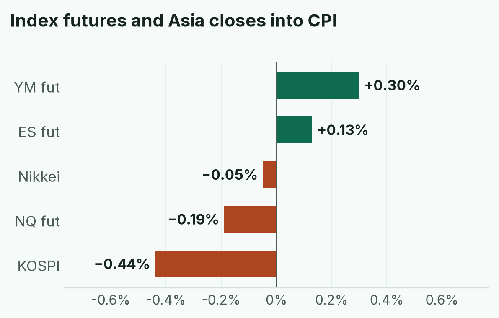
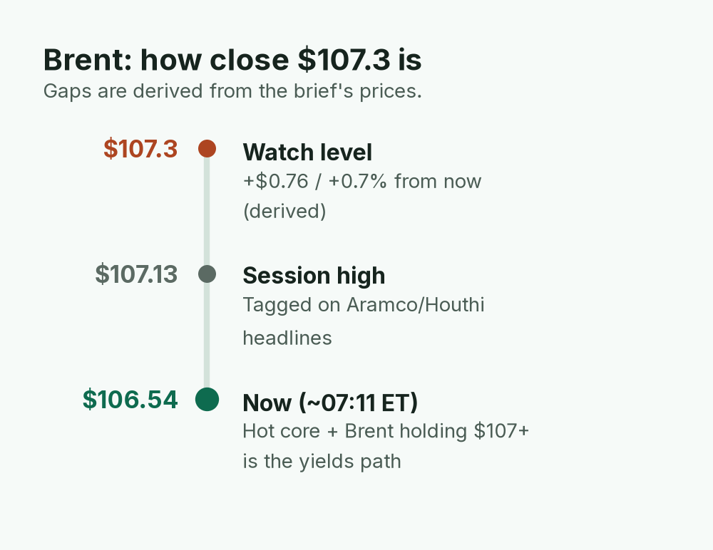
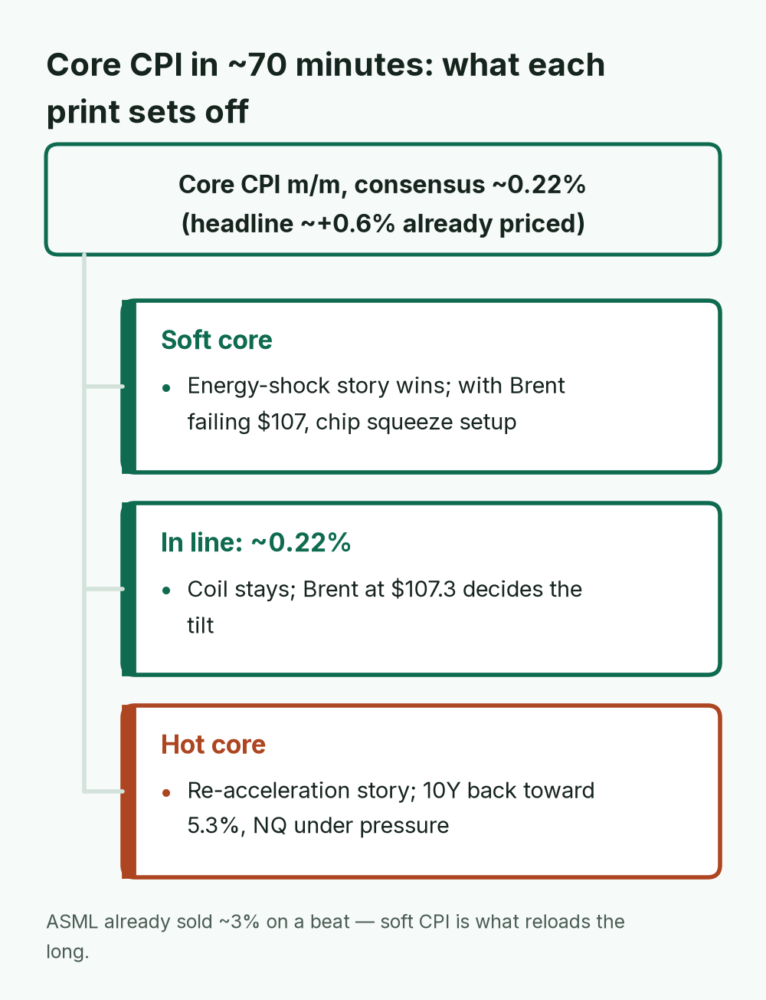
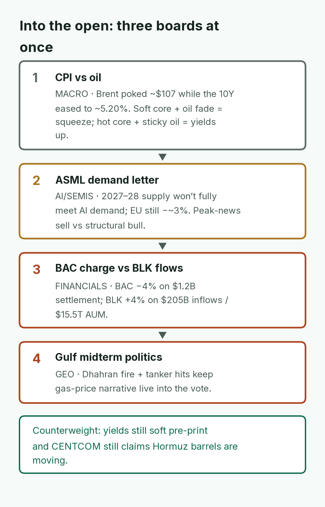
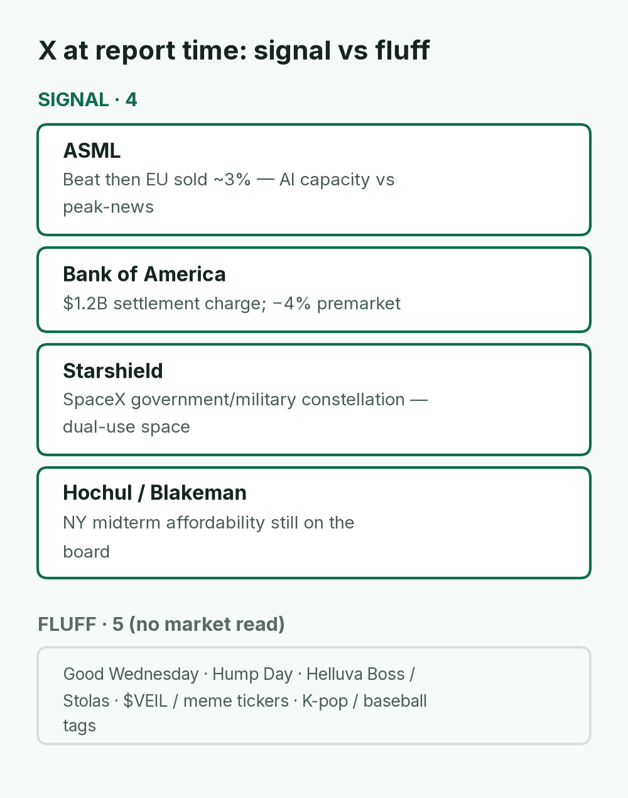
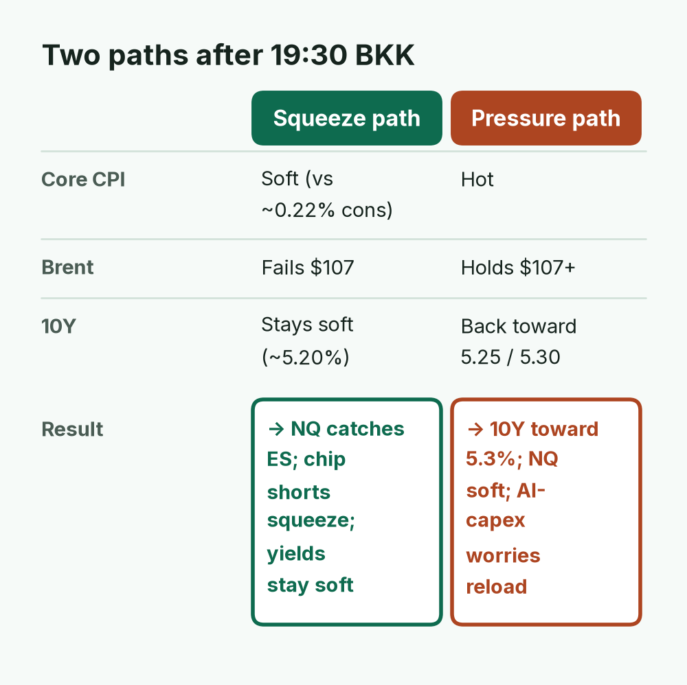

BAC fell on its $1.2B settlement charge and ASML sold off in Europe despite a strong beat, while BLK rose on its clean beat. The open is pricing dispersion and event risk, not a clean risk-on bid.
TODAY'S CALL
Core CPI at 19:30 BKK is the only binary left. Soft core + Brent failing $107 favors the chip squeeze; hot core with oil sticky keeps 5.3% yields and NQ soft.
WATCH (BKK)
MS print if pending (call 20:30 BKK)
19:30 CPI + BAC call (same window)
ASML US call 20:00
Brent $107.3
Cash open 21:30

The Dow is outperforming Nasdaq into the print, and Asia faded (KOSPI gave back its +2% morning bounce). That is rotation, not risk appetite, ahead of core CPI at 19:30 BKK.
April · Market Intel, pre-US open · Wed Oct 14, 2026 · ~18:20 BKK / ~07:20 ET
Headline: Prints are in; CPI still owns the open. ES futures ~7,866 (+0.13%), NQ ~30,733 (−0.19%), YM ~52,090 (+0.30%). Brent ~$106.54 after tagging ~$107.1–107.4 on Aramco/Houthi headlines. 10Y ~5.198% (−~2 bp). BAC −4.3% premarket on the $1.2B settlement charge; BLK ~+4% on a clean beat; ASML beat hard then sold ~3% in Europe. Asia faded: KOSPI closed ~6,009 (−0.44%) after morning’s +2% bounce; Nikkei flat (−0.05%).
1) Top signals (into US open)
Futures / rates: ES ~7,866 (+0.13%), NQ ~30,733 (−0.19%), YM ~52,090 (+0.30%). 10Y ~5.198% (−~2 bp), 2Y ~4.772%. Rotational into CPI, not risk-on. (High: Yahoo ~07:11 ET; CNBC)
BAC / BLK / MS: BAC GAAP EPS $0.91 after $1.2B settlement ($0.17/sh); adj $1.08, NII +8%; premarket ~−4.3%. BLK adj EPS $15.93 (vs ~$14.30), $205B inflows, AUM $15.5T; ~+4%. MS not confirmed at brief time (call 09:30 ET). (High: BAC 8-K; BLK IR)
ASML: Sales €11.7B, EPS €12.95, FY €44–45B; 2027–28 supply won’t fully meet AI demand — then EU sold ~3%. (High: ASML; Newsquawk)
Oil / Asia: Brent ~$106.54 (high ~$107.13) after Dhahran headlines; $107.3 still live. KOSPI closed ~6,009 (−0.44%) after morning’s +2% bounce; Nikkei −0.05%. (High: Yahoo; Jiji)

Brent is less than 1% (derived) under the $107.3 trigger after already tagging ~$107.13. Whether it fails or holds there is half of the CPI decision in the bottom line.
2) Why it matters
Morning’s coil is still the trade: core CPI at 19:30 BKK / 08:30 ET (cons ~0.22% m/m, ~2.5% y/y) decides whether this is an energy-shock story or a re-acceleration. ASML’s demand letter should have been a chip green light — the European selloff says positioning wanted perfection, not “we can’t build enough.” BAC’s charge is known; the −4% premarket is the market punishing the compliance overhang into Moynihan’s 08:30 ET call. Mentor: when the AI bottleneck name beats and sells while the Dow outperforms NQ, the open is pricing dispersion + event risk, not a clean risk-on bid.

Earnings are in; only core CPI decides whether this is an energy shock or re-acceleration. The branch it lands on sets the 10Y and NQ for the cash open.
3) Chessboard
CPI vs oil: Brent poked the $107 zone while yields eased. Soft core + oil fade = chip squeeze setup. Hot core + Brent holding $107+ = 10Y back toward 5.3% and NQ under pressure.
ASML vs BlackRock: One says AI capex demand outruns lithography capacity into 2028; the other just cut US stocks to neutral yesterday and then beat on flows. Flows are still coming; equity risk premium is the debate.
Gulf: Dhahran fire + tanker hits keep midterm energy politics live (gas ~$4.33 narrative on X). CENTCOM still claims corridor control; price is the scoreboard.

Three separate fights (macro, AI chips, banks) plus the Gulf all converge on one referee: core CPI at 19:30 BKK.
4) Leading indicators (BKK)
Now: MS print if not yet out (call 20:30 BKK / 09:30 ET).
19:30: September CPI — core is the game — and BAC’s investor call in the same window.
20:00: ASML US call. 20:30: MS call. 21:30: Cash open.
Signal:ASML and Bank of America are live earnings/compliance trends into the US open. Starshield (SpaceX’s government/military constellation) is the non-fluff tech/geo tag — dual-use space, not retail meme. Hochul/Blakeman keeps NY midterm affordability on the board. X news feeds also pushing Hormuz/fuel-price midterm fights, BAC’s $1.2B Treasury penalty, and Bitcoin ~$83.5k into CPI.
Fluff: Good Wednesday / Hump Day, Helluva Boss, crypto meme tickers ($VEIL, $BUSTED, $INU), baseball and idol release tags.

Only four trends carry a market read, and two of them (ASML, Bank of America) are today's earnings stories. The rest is Wednesday noise.
Bottom line
You already have the earnings surprise stack (BAC charge, BLK beat, ASML demand letter then sell). The only binary that resets the board is core CPI in ~70 minutes. Soft core + Brent failing $107 favors the chip-squeeze morning called for; hot core with oil sticky keeps 5.3% yields and NQ soft. Numerology aside, 777 on the tape yesterday was just coiled vol — today it uncoils at 19:30 BKK.
Confidence: futures, yields, BAC/BLK/ASML primary releases, Nikkei close high; KOSPI close and ASML EU % medium (secondary wires); MS not verified at brief time; X trends live.

Both paths need oil to confirm the print. Watch whether Brent fails or holds $107 after 19:30 BKK to know which one is live.
Sent by April via briefs-by-april@mail.grokbot.com · Figures from April's brief; "—" = not reported. Not investment advice.